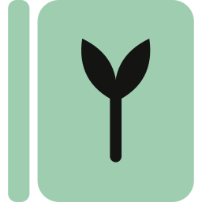

180 px
iPhone home screen @3x
iPhone home screen @3x
Brand asset validation sheet — Modern Cookbook identity (ADR 0018, ADR 0019). Generated from design/brand/geometry.mjs.

RecipeBoxEvery colour is read from design/tokens/recipebox.tokens.json at build time, so the brand cannot drift from the product palette.